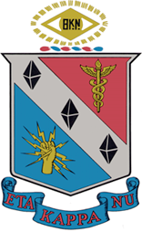
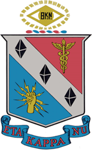

About Me
My Short Biography
My dad was an engineer at NASA with the Apollo project. I grew up in Seabrook Texas during this time. My family, mom, dad, my older brother and my two sisters moved to Tacoma when I was 13. Since then I have lived in Tacoma, Lacey, Seattle, Everett and Olympia since 1972.
Most of my life has been here in Tacoma Washington. I have lived in Tacoma and Olympia for most of my entire life. This is my home. I am native to this area. This is my stomping grounds.
I graduated from Wilson High School in Tacoma. I then worked at Microsoft. I worked with the early development of Windows. This was during the O/S 2 and windows battle. I guess we did well, Windows is pretty dominate in the market. I then served in the Air Force at Dyess AFB in Texas. I served in a Security Police Squadron for the 96th Bomb Wing. I served in many capacities as administration, security patrols for a B-52H and later B-B1 bombers as well as Law Enforcement patrol on the base. Often in the military you learn to be a jack of all traits. You do what is needed! After serving I came back and went to school at the University of Washington and completed a degree and Mathematics and a degree in Computer Science. I then worked at Boeing as an engineer working on the 747, 767 and 777 line. After quite a few years there I had saved up enough to go back to school where I got a degree in Electrical Engineering. This is the area of engineering that I had come to want to work in. I graduated Tau Beta Pi (Engineering Honor Society) and IEEE Eta Kappa Nu (Electrical Engineering Honor Society). After completing my degree I worked at Intel in Dupont Washington designing high end computer servers. I worked there for many years. I have been fortunate enough to work with many fine people in my life.
My wife then went on her own way and left me as a single parent taking care of my son. She is still the smarted and bravest person that I have ever known. But, this is where I feel that my real life started. I was then able to spend more time serving others. I worked as a volunteer at the elementary school teaching kids to read and write. This is the most rewarding time of my life. I was also fortunate enough to help teach children in junior high. I helped with Boy scouts, kids soccer, and baseball. I was able to help my church to build housing for people in need. At this time I realized that my mission in live is to serve others. My 95 year old mother moved in with me so that I could help take care of her. I was also able to help a homeless friend get on his feet by making sure that he had food and a place to sleep. He slept in an old camper that I had. He is now on his feet. My sister went though some very unfortunate times so she moved in with us. So we have a full house. Me, my son, my sister, my mother, and several cats! My job in life is to serve others and there is nothing more rewarding in life than that. We are all here on this planet for a purpose. We may never really know exactly what this is, but there is one overriding purpose why each and every one of us is here. That is, we are all here to make the world a better place since we have been a part of it. And the greatest blessing that we can have is to serve each other. After all, the only thing that we ultimately have is each other. I would be blessed to be able to serve you. Please help me to serve you.
 
